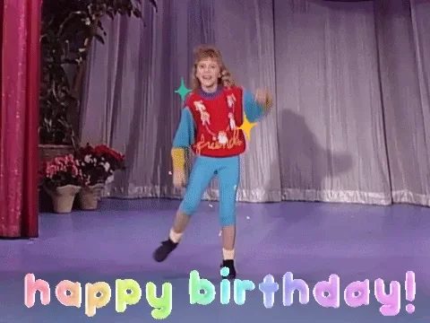
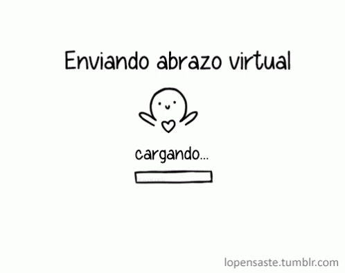

¡Feliz cumpleaños!
¡Feliz cumpleaños!
Chamaaaaa, ya son 17 años naguara como pasa el tiempo, diosmio, recuerdo cuando todavia eres una carajita y yo te cambiaba los pañales jkadjkas, naguara que recuerdos mas lindos cuando me orinaste encima vale jkadjkadjkasjk... Caraepanquecatostada, enserio eres una persona con una gran puntería como para echar ese chorro e miao' xd... Creo que es la mejor presentación que he hecho sobre un regalo en mi vida jkdajks, la verdad aún tenias dudas sobre que color elegir y creo que el color con el que yo te veo es el morado, la verdad, siempre te he visto con ese morado, chama la verdad es como decir que la Divaza no pega con el color rosado, o sea mami ajkdajkdsak

La verdad es que no soy gay jakdkjas, pero me gusta que me digas chama por que ya se ha vuelto como un saludo, y la neta me alegra haberte conocido. Me alegra que me hayas enseñado la lección más importante de todas, la de como vivir, y si la verdad decir eso teniendo una foto de la divaza arriba del texto no parece muy... profundo ajkdajksdsjka, pero ajá, lo importante es que te amo, y que tu fuiste, y seras siempre la primer amiga que tuve, la primer persona que estuvo ahí, que me hizo reír incontables veces, y que al escuchar las canciones que me recuerdan a ella simplemente es inevitable sonreír, y pensar, "wow, esa si es una gran chama"
Pero como te estaba diciendo, me enseñaste una gran lección y la verdad es que eso nunca te lo voy a poder pagar por completo, te tendre que pagar en trimestres mana jakdajks, discúlpame esa xd, mala mía xd... Me encanta como eres, me encanta como te expresas, y sé que para nadie es fácil abrirse como persona (y no chama, no abrir las piernas por favor xd), contigo siento que puedo contar todo, incluso de los días más malos del mundo, es increíble la gran huella que dejaste en mi corazón, y no de forma amorosa, si no simplemente el gran cariño y aprecio que te tengo es increíble

Es prácticamente indescriptible como simplemente entraste a mi vida, quiero decir, ¿quién lo habría pensado?, una panquecatostada y un panquecotostado se hicieran amigos, diosmio que impensable jakdjakdjkadjkadskjakasdada, ¿sabes?, sinceramente no me acuerdo el primer día que nos conocimos, pero creo que el primer día que nos escribimos por chat yo fui el que te escribió o no lo se, no lo recuerdo muy bien, pero se que uno de mis recuerdos más hermosos es mientras escuchaba esta canción y hablaba contigo, simplemente siempre que escucho esta canción me recuerda a ti...
Eres una persona muy increíble, enserio, recuerdo la vez que estábamos en el poliderpotivo y teníamos ganas de vomitar todos por estar en el rueda rueda ese y tu dijiste "entonces vamos a vomitar todos, vomito para acá, vomito pa' alla' jakdajksdjaksdkja", como me reí ese día contigo jakds, enserio te extrañe, y aún lo hago, extraño todas esas locuras en el liceo, y siempre que pasaba "chamaaaaaa" jakdajka, diosmio que buenos recuerdos, es triste todo esto de la pandemia, simplemente no podremos graduarnos con alegría, esa sonrisa no sera la misma, algunos ya consiguieron trabajo, otros solo se separaron del grupo, otros solo dejaron de estudiar, y la lista es larga, maldita pandemia... La verdad, es que yo quería graduarme con ustedes y decir que viví el mejor año de mi vida... Pero tal vez en 6to volvamos y espero verte, viamonte...
Pero dejemos de ser tan dramáticos y tristes... Lo que vine a decirte es que pases un feliz cumpleaños, esto te lo voy a entregar días despues, pero al menos quisiera que la fueras pasado bien, te amo chama, enserio gracias por cada risa, gracias por cada abrazo que me diste, gracias por todo, enserio te debo mucho... Aunque para ti tal vez sea algo como equis, la primera vez que hablamos por chat enserio me sentí tan bien... Era como, que podía contar las cosas que siempre me guarde para mi mismo, y enserio, no hay mejor sensación que esa, ese sentimiento de felicidad es único, escucha la canción, es romántica, pero para mi tiene un significado más como de "aquí empieza tu vida"...

Cada vez que escucho la canción "Older", recuerdo cuando fuimos al parque del este, cuando casi me caigo al rio al intentar pasarme de barco y quedar como un puente jajajaja, no tengo fotos de ese día pero fue uno de los mejores del mundo, simplemente gracias por llegar a mi vida...

Espero este regalo quede en tu memoria, lo puedes visitar siempre que quieras, el regalo siempre estará allí, por siempre y para siempre... Al igual que espero que yo... Así te deseo feliz cumpleaños, y te dejo una playlist para que la escuches, te amo...
